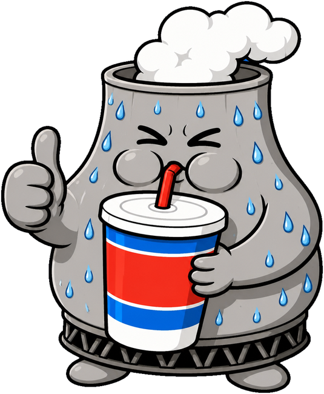

TODAY'S LITTLE SIPS
0.00 L
0SIPS
0PROMPTS
0TOKENS
DAILY RATION0 / 2 L
CHILL


Your AI's water, in things you can picture.
Twelve tiny reasons to come back.
Your ration. Your cooling loop.
A small estimate, with the receipts.
One AI reply is one sip, but sips are not all the same size. A short chat answer is about 1 mL. An agent turn that re-reads a 300,000-token project can be 50 mL or more. THIRSTY estimates each reply in two steps.
1. Energy from tokens. Per million tokens: 600 Wh for tokens the model writes (reasoning included), 250 Wh for fresh input, 310 Wh for input written to the cache, 25 Wh for cached input it re-reads. Opus-class models count 1.7 times, mini-class models 0.4 times. Claude Code and Codex logs give the exact tokens; for web chats the extension measures how long the conversation, your message and the answer are.
2. Water from energy. Cooling water on site plus the water power plants evaporate to make that electricity, for the cloud each service runs on: about 3.3 mL per Wh on AWS (Claude), 3.4 on Azure (ChatGPT, Codex, Copilot), 4.2 on Google (Gemini), 7.0 in China (DeepSeek).
These are estimates, likely right within a factor of three either way. Providers do not publish per-reply numbers, so the model is built from the measurements they and researchers have published.
Logs are opened read-only. Only counts, token numbers, IDs, hashed dedupe keys and byte offsets are saved locally. The extension sends counts and message lengths to 127.0.0.1, never text.
Plain chats inside the Claude and ChatGPT desktop apps have no local log and cannot be tracked. Their Code and Codex sessions are tracked.